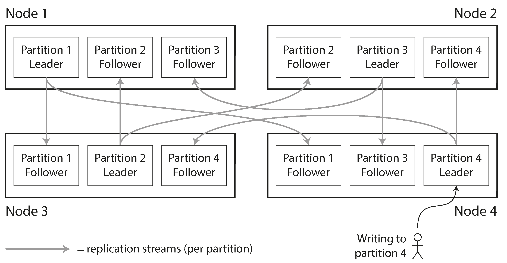
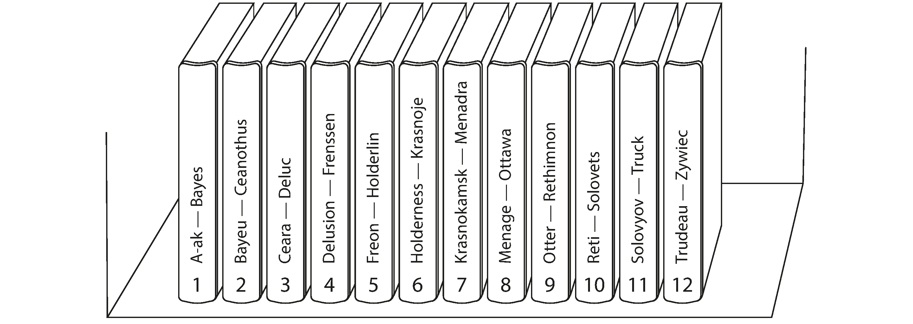
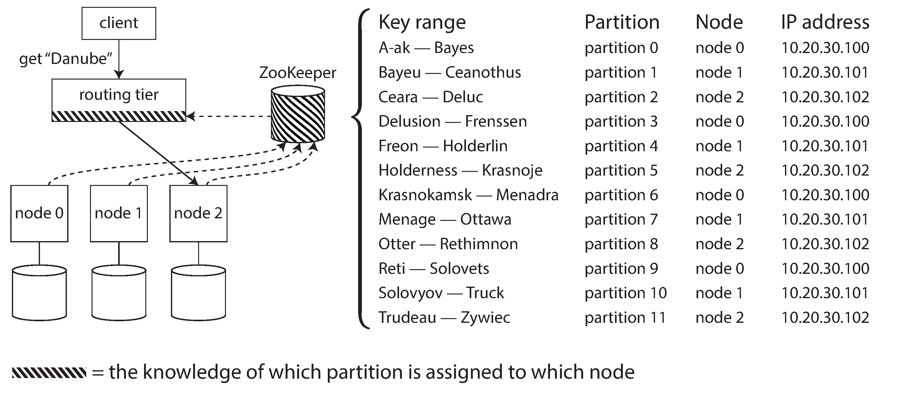

"We must break away from the sequential and not limit the computers."
— Grace Murray Hopper, Management and the Computer of the Future (1962)
For very large datasets or very high throughput, replication alone isn't enough. We need to break data into partitions (a.k.a. shards, regions, tablets, vnodes).
Why Partition?
Scalability
Spread data and query load across many nodes
The Goal
10 nodes should handle 10× the data and 10× the throughput of a single node.
The Enemy: Hot Spots 🔥
Skewed partitioning → disproportionate load on one partition → 9 idle nodes, 1 bottleneck.
Partitioning Strategies
Key range vs hash — and their trade-offs
Partitioning + Replication
Usually combined: each partition is replicated on multiple nodes for fault tolerance.
Each node may store multiple partitions
A node can be leader for some partitions, follower for others
Partitioning scheme is independent of replication scheme

Partitioning by Key Range
Assign continuous ranges of keys to each partition — like volumes of an encyclopedia.
Ranges adapt to data distribution (not evenly spaced)
Within each partition, keys are sorted → range scans are efficient
Great for time-series data: fetch all readings from a month
Used by: HBaseBigtableRethinkDB

Key Range: The Hot Spot Problem
If key is a timestamp, all writes go to the partition for today → hot spot!
❌ Problem
Key: 2024-01-15-14:30:05
← all writes hit today's partition
✅ Solution
Key: sensor_42/2024-01-15-14:30:05
← partition first by sensor, then time
Spread writes across sensors, but now range queries need per-sensor requests.
Partitioning by Hash of Key
Apply a hash function to each key → assign ranges of hashes to partitions.
Even similar keys → different hashes → evenly distributed
Alternative: Gossip protocol (Cassandra, Riak) — no external dependency, but more complexity in DB nodes.

🔬 Partitioning Strategy Lab — Key Range vs Hash
💡 Try time-series with key-range: all writes hit one partition!
Then switch to hash — even distribution but no range queries.
📊 Key Range Partitioning
🔑 Hash Partitioning
🔄 Rebalancing Simulator — What Happens When You Add a Node?
Nodes: 4
💡 Based on Ch6 "Rebalancing Partitions". hash mod N moves most keys when N changes. Fixed partitions pre-splits data and moves whole partitions. Dynamic splits/merges partitions as data grows.
Summary
Partitioning approaches, indexes, rebalancing, and routing
Chapter 6 Summary
Partitioning Strategies
Key range — sorted, range queries, but hot spot risk
Hash — even distribution, but no range queries
Compound key — hash + sort (Cassandra)
Secondary Indexes
Local (document) — fast writes, scatter/gather reads
Global (term) — fast reads, complex writes
Rebalancing
Fixed partitions, dynamic splitting, or per-node
Never use hash mod N!
Human-in-the-loop is safer
Request Routing
Any-node, routing tier, or smart client
ZooKeeper or gossip protocol
Next: what happens when writes to multiple partitions need to succeed or fail together? → Transactions (Ch 7)
Questions?
Designing Data-Intensive Applications • Chapter 6
MCQ Quiz
100 Questions • Test Your Knowledge
Q1Partitioning
What is partitioning (also called sharding)?
A) Applying columnar compression to reduce the storage footprint of each node
B) Keeping full copies of a dataset on several nodes so that read requests can always be served from the geographically nearest replica
C) Breaking a large dataset into smaller subsets called partitions so each is stored on a different node
D) Encrypting each record individually before storing it on any node
Answer: C) Partitioning means dividing a large dataset into partitions (shards), each assigned to different nodes.
Q2Terminology
What is the term for a partition in different databases?
A) All databases use 'partition'
B) Leader, follower, and observer — matching the replication topology terms
C) All databases standardize on the same term: table, column, row, and cell
D) Shard (MongoDB/ES), region (HBase), tablet (Bigtable), vnode (Cassandra)
Answer: D) What is called a partition here is a shard in MongoDB, a region in HBase, a tablet in Bigtable, a vnode in Cassandra and Riak.
Q3Goal
What is the main reason to partition data?
A) Improved security by isolating sensitive data on dedicated, hardened nodes
B) Simpler application code since each partition handles a smaller subset of queries
C) Lower hardware cost per node since smaller machines can be used for each partition
D) Scalability — distribute data and query load across multiple nodes
Answer: D) The main reason for partitioning is scalability: a large dataset can be distributed across many disks, and query load across many processors.
Q4Combined with Replication
How do partitioning and replication typically work together?
A) Each partition is replicated across multiple nodes for fault tolerance
B) Replication replaces partitioning
C) Each replica has all partitions
D) They cannot be combined — a system must choose either replication or partitioning
Answer: A) Partitioning is usually combined with replication so that copies of each partition are stored on multiple nodes.
Q5Skewed Partition
What is a skewed partition?
A) A partition whose data is encrypted with a key unique to that partition across multiple independent nodes to distribute both the storage footprint and the query processing workload evenly
B) A partition maintained exclusively as a backup, not serving live traffic
C) A partition that has become corrupted due to a disk failure or software bug
D) A partition with disproportionately more data or queries than others, making partitioning less effective
Answer: D) If the partitioning is unfair so some partitions have more data or queries, we call it skewed.
Q6Hot Spot
What is a hot spot?
A) A warm standby server that can be promoted to primary during failover
B) A partition with disproportionately high load
C) A frequently accessed application feature that generates high cache hit rates
D) A physical location of a server
Answer: B) A partition with disproportionately high load is called a hot spot.
Q7Random Assignment
Why is random assignment of records to partitions a bad idea?
A) Random assignment causes data loss when nodes holding different key ranges fail simultaneously
B) Random assignment is too slow because each write requires a random disk seek
C) Random assignment creates duplicate records since multiple nodes may store the same key
D) There's no way to know which partition a record is on, so you must query all partitions
Answer: D) If you distribute randomly, when reading you have no way of knowing which partition the item is on, requiring parallel queries to all nodes.
Q8Key Range
How does key range partitioning work?
A) All keys in one partition
B) A hash function is applied to each key, and the hash range is divided among partitions
C) Assign a continuous range of keys to each partition, like volumes of an encyclopedia
D) Keys are assigned to partitions randomly using a uniform distribution function
Answer: C) Key range partitioning assigns a contiguous range of keys (from some minimum to maximum) to each partition.
Q9Key Range Advantage
What advantage does key range partitioning offer?
A) Efficient range queries — nearby keys are stored on the same partition
B) Even load distribution since each range contains roughly the same number of keys
C) Better security because keys in the same range cannot be accessed across partitions
D) Less disk space because adjacent keys can share common prefix compression
Answer: A) Key range partitioning keeps keys in sorted order within each partition, making range scans efficient.
Q10Key Range Risk
What risk does key range partitioning have?
A) Range partitions require every query to be broadcast to all nodes in the cluster before any meaningful result can be returned to the client
B) Distribution that is too even — the database cannot exploit data locality for performance
C) Certain access patterns can lead to hot spots (e.g., timestamp-based keys concentrate writes on one partition)
D) Requires more storage because range boundaries must be stored as metadata on every node
Answer: C) If the key is a timestamp, all writes go to the partition for today, creating a hot spot while others sit idle.
Q11Timestamp Fix
How can you avoid hot spots with timestamp-based keys?
A) Use a single partition for all timestamped data and rely on compaction for performance
B) Avoid timestamps entirely and use random UUIDs as keys for all time-series data
C) Delete old data periodically so that writes are spread across fewer partitions
D) Prefix the timestamp with something else (e.g., sensor name) so writes are distributed
Answer: D) Prefix the timestamp with the sensor name so writes are distributed across partitions for different sensors.
Q12Hash Partitioning
What does hash partitioning use to assign keys?
A) A hash function applied to the key to determine the partition
B) Alphabetical ordering of keys, with each partition covering a range of the alphabet
C) The byte length of the key, with longer keys assigned to partitions with more capacity
D) A random number generator seeded with the current system time for even distribution
Answer: A) A hash function is applied to each key, and the hash determines which partition owns the key.
Q13Hash Function
Why must the hash function be consistent across processes?
A) To isolate sensitive data so that a breach in one partition cannot spread to others
B) To reduce the storage footprint by applying block-level compression to each partition
C) Different processes must assign the same key to the same partition
D) For encryption
Answer: C) The hash function must be the same across all processes so the same key always maps to the same partition.
Q14Cryptographic Hash
Do partitioning hash functions need to be cryptographically strong?
A) No, they just need to distribute keys uniformly — MD5 or Murmur3 work fine
B) Only in the cloud
C) Only for financial data
D) Yes, otherwise attackers can predict partition placement and concentrate traffic on one shard
Answer: A) The hash function need not be cryptographically strong. For example, Cassandra and MongoDB use MD5, Voldemort uses Fowler-Noll-Vo.
Q15Java hashCode
Why is Java's Object.hashCode() unsuitable for partitioning?
A) The same key can have different hash values in different processes
B) Its values are too small, causing many distinct keys to collide on the same partition
C) It only works with strings
D) It's too secure
Answer: A) Java's hashCode() is not suitable because the same key may have a different hash in different processes.
Q16Hash Range Queries
What is the downside of hash partitioning?
A) More disk usage
B) Uneven distribution
C) Loss of efficient range queries — adjacent keys are scattered across partitions
D) Writes become slower because every update must be checked against all partition ranges first
Answer: C) By using the hash of the key, you lose the ability to do efficient range queries. Keys once adjacent are now scattered.
Q17Cassandra Compromise
How does Cassandra achieve a compromise between range and hash partitioning?
A) Only uses range by applying a deterministic function that maps each input to a seemingly random but reproducible numeric value
B) Compound primary key: first part hashed for partition, remaining columns sorted within partition
C) No compromise possible
D) Uses both randomly
Answer: B) Cassandra uses compound primary keys: the first part is hashed to determine the partition, remaining columns are used as a concatenated index for sorting within that partition.
Q18Celebrity Problem
What is the 'celebrity' hot spot problem?
A) Too many partitions under normal operating conditions with standard workload patterns and routine maintenance procedures
B) Celebrity data is larger
C) A single key (e.g., celebrity user ID) gets enormous activity, overwhelming one partition
D) Database is popular
Answer: C) If one key is extremely hot (e.g., a celebrity's user ID on social media), all activity for that key ends up on the same partition.
Q19Celebrity Mitigation
How can the celebrity hot spot problem be mitigated?
A) Add more indexes in a typical production deployment with multiple interconnected nodes spanning several availability zones
B) Use a bigger server
C) Application adds a random number to the key to split writes across partitions, but reads must combine from all split keys
D) Delete the celebrity data
Answer: C) Add a random number prefix/suffix to the key to spread writes, but reads now need to query and merge from all split keys.
Q20Secondary Indexes
Why do secondary indexes complicate partitioning?
A) They don't to accelerate lookup performance for commonly queried fields without scanning every row in the table
B) A secondary index doesn't map neatly to partitions — the value being indexed doesn't uniquely identify a partition
C) They use too much memory
D) They slow writes to accelerate lookup performance for commonly queried fields without scanning every row in the table
Answer: B) Secondary indexes don't map neatly to partitions because the indexed field doesn't identify a partition boundary.
Q21Document-Partitioned Index
What is a document-partitioned (local) secondary index?
A) Index stored on one node
B) Each partition maintains its own secondary index, covering only documents in that partition
C) Index in a separate database
D) One global index while the storage engine transparently maintains the mapping between indexed terms and their corresponding row identifiers
Answer: B) Each partition maintains its own secondary indexes, covering only the documents in that partition.
Q22Scatter/Gather
What is scatter/gather?
A) A backup method
B) Data compression
C) Load balancing; which can amplify tail latency because the overall response time is determined by the slowest partition queried
D) Querying all partitions when using document-partitioned indexes (since any partition might have matching documents)
Answer: D) Querying a document-partitioned index requires sending the query to all partitions and combining results — known as scatter/gather.
Q23Scatter/Gather Cost
Why is scatter/gather expensive?
A) Uses too much disk
B) Requires special hardware
C) Network encryption by sending the query to all partitions in parallel and combining the results from each one into a single response
D) It makes read queries on secondary indexes expensive due to tail latency amplification
Answer: D) Scatter/gather is prone to tail latency amplification because you must wait for the slowest partition to respond.
Q24Term-Partitioned Index
What is a term-partitioned (global) secondary index?
A) A global index partitioned differently from the data — each index partition covers terms from all data partitions
B) Each partition has its own index
C) Index stored in memory only
D) An index stored alongside each data partition so that secondary lookups can be resolved locally without ever needing cross-partition network communication
Answer: A) A global index covers data in all partitions, but the index itself is partitioned by the indexed term.
Q25Global Index Advantage
What advantage does a global index offer over local?
A) Less storage to accelerate lookup performance for commonly queried fields without scanning every row in the table
B) Simpler to maintain
C) Faster writes
D) Reads can be served from a single index partition rather than scatter/gather across all partitions
Answer: D) Reads are more efficient because a client only needs to query the partition containing the desired term.
Q26Global Index Disadvantage
What is the downside of a global secondary index?
A) Uses no storage
B) Doesn't support range queries
C) Writes are slower and more complicated because a write may affect multiple index partitions
D) Slow reads while the storage engine transparently maintains the mapping between indexed terms and their corresponding row identifiers
Answer: C) A write to a single document may affect multiple partitions of the index, making writes slower and more complex.
Q27Async Index Update
How are global secondary indexes typically updated?
A) Manually to accelerate lookup performance for commonly queried fields without scanning every row in the table
B) Synchronously
C) Never updated
D) Asynchronously — there may be a delay before a write is reflected in the index
Answer: D) In practice, updates to global secondary indexes are often asynchronous, meaning reads may be stale.
Q28Rebalancing
What is rebalancing?
A) Repartitioning data
B) Defragmenting disks
C) Deleting old data without interrupting ongoing reads and writes or requiring the database to be taken offline for maintenance
D) Moving data between nodes to ensure fair load distribution as nodes are added/removed
Answer: D) Rebalancing is the process of moving load from one node to another to maintain fair distribution.
Q29Rebalancing Requirements
Which is NOT a requirement for rebalancing?
A) Load should be shared fairly after rebalancing
B) Only the minimum amount of data should be moved
C) All data should be moved to new nodes
D) The database should continue serving reads and writes during rebalancing
Answer: C) Rebalancing should move only the minimum amount of data, not all data. The DB should keep serving and distribute fairly.
Q30Hash Mod N
Why is hash mod N a bad rebalancing strategy?
A) It's too simple
B) It doesn't work with hashing
C) When N (number of nodes) changes, most keys must be moved, causing excessive data movement
D) It's too slow without interrupting ongoing reads and writes or requiring the database to be taken offline for maintenance
Answer: C) If the number of nodes N changes, most keys will need to be moved — making it excessively expensive.
Q31Fixed Partitions
How does fixed-partition rebalancing work?
A) Create many more partitions than nodes, assign several to each node; when a node is added, it takes some partitions from existing nodes
B) Create one partition per record without interrupting ongoing reads and writes or requiring the database to be taken offline for maintenance
C) Create one fixed partition per node and rebalance by moving records between all nodes whenever the cluster size changes
D) Dynamic creation only without interrupting ongoing reads and writes or requiring the database to be taken offline for maintenance
Answer: A) Create many more partitions than nodes and assign several to each node. When adding a node, steal a few partitions from existing nodes.
Q32Fixed Count Tradeoff
What is the challenge of choosing the right number of fixed partitions?
A) Must be a prime number
B) Too many partitions have overhead; too few limit rebalancing granularity and may be too large
C) No challenge — gossip protocols ensure all nodes instantly learn about partition ownership changes
D) Must match node count exactly
Answer: B) If partitions are too large, rebalancing is expensive; if too small, overhead is high. The right number depends on expected dataset size.
Q33Dynamic Partitioning
How does dynamic partitioning work?
A) One partition per table
B) Manual creation only across multiple independent nodes to distribute both the storage footprint and the query processing workload evenly
C) Fixed number forever
D) Partitions split when they grow too large and merge when they shrink too small
Answer: D) When a partition exceeds a configured size, it is split into two. When it shrinks below a threshold, it is merged with an adjacent partition.
Q34Pre-Splitting
What is pre-splitting in dynamic partitioning?
A) Splitting data in code
B) Splitting large files
C) Dividing the cluster across multiple independent nodes to distribute both the storage footprint and the query processing workload evenly
D) Configuring an initial set of partitions on an empty database so writes aren't concentrated on one node
Answer: D) HBase and MongoDB allow an initial set of partitions to be configured to avoid all writes going to a single partition initially.
Q35Proportional Partitions
What is proportional partitioning?
A) Size-based splitting only
B) Fixed number of partitions total
C) A fixed number of partitions per node — when a node is added, it randomly splits existing partitions
D) One partition per CPU across multiple independent nodes to distribute both the storage footprint and the query processing workload evenly
Answer: C) Cassandra and Ketama use a fixed number of partitions per node. Adding a node randomly splits existing partitions.
Q36Automatic vs Manual
Why do some systems (like Couchbase) require manual rebalancing?
A) Legal requirements
B) They can't do it automatically
C) Automatic rebalancing can cause cascading failures — manual adds human oversight
D) It's faster to redistribute the data and query load evenly after adding or removing nodes from the distributed cluster
Answer: C) Fully automated rebalancing can be unpredictable. Adding a human in the loop prevents surprises and cascading failures.
Q37Automatic Danger
What can go wrong with fully automatic rebalancing?
A) Nothing — the other nodes continue operating normally without any interruption
B) An overloaded node is thought to be dead, causing rebalancing that further increases load on other nodes
C) Partitions get too small without interrupting ongoing reads and writes or requiring the database to be taken offline for maintenance
D) Data is encrypted to prevent the failed node from corrupting other partitions
Answer: B) Automatic rebalancing combined with automatic failure detection can cause cascading problems when a node is simply overloaded (not dead).
Q38Request Routing
What is the general problem of knowing which node to contact?
A) IP assignment under normal operating conditions with standard workload patterns and routine maintenance procedures
B) Service discovery — how does a client know which node owns a partition for a given key?
C) Firewall configuration
D) DNS resolution
Answer: B) This is an instance of a general problem called service discovery: which node should a client contact?
Q39Routing Approaches
What are the three approaches to request routing?
A) A leader node, follower nodes, and observer nodes that only participate in consensus
B) HTTP, gRPC, TCP
C) Client contacts any node (which forwards), client uses routing tier, or client is partition-aware
D) DNS lookup, consensus voting, and replica repair coordinated before each client request is routed
Answer: C) 1) Contact any node (it forwards if needed), 2) Send to a routing tier first, 3) Client is directly aware of partition assignment.
Q40ZooKeeper
What role does ZooKeeper play in partitioned systems?
A) Maintains the authoritative mapping of partitions to nodes, notifying routing tiers/clients of changes
B) Tracks cluster membership and leader elections, but leaves partition-to-node routing decisions entirely to clients
C) Serves client queries
D) Rebalances data
Answer: A) ZooKeeper maintains the authoritative mapping of partitions to nodes and notifies interested parties (routing tier, nodes, or clients) when it changes.
Q41ZooKeeper Users
Which databases use ZooKeeper for partition metadata?
A) SQLite across multiple independent nodes to distribute both the storage footprint and the query processing workload evenly
B) HBase, SolrCloud, Kafka
C) MySQL, PostgreSQL
D) Redis, Memcached
Answer: B) LinkedIn's Espresso, HBase, SolrCloud, and Kafka all use ZooKeeper to track partition assignment.
Q42Gossip Protocol
How does Cassandra handle request routing without ZooKeeper?
A) Gossip protocol — nodes share partition state among themselves, any node can handle requests
B) Manual configuration
C) Clients hash the partition key into DNS records, which then resolve directly to the owning node
D) Central directory
Answer: A) Cassandra uses a gossip protocol among nodes to disseminate partition state changes, avoiding an external coordination service.
Q43Couchbase Routing
How does Couchbase handle routing?
A) A routing tier called moxi that learns routing from cluster nodes
B) A client library that caches the partition map and talks directly to target nodes
C) ZooKeeper
D) Client-side awareness
Answer: A) Couchbase uses moxi as a routing tier, which learns routing information from the cluster nodes.
Q44Consistent Hashing
What is 'consistent hashing' and why does the book avoid the term?
A) A type of encryption
B) Originally means randomly choosing partition boundaries (not truly consistent) — the book prefers 'hash partitioning'
C) A perfect hashing method
D) A sorting algorithm by applying a deterministic function that maps each input to a seemingly random but reproducible numeric value
Answer: B) The term consistent hashing is confusing — it was defined for a specific approach using randomly chosen partition boundaries, which doesn't work well in practice. The book prefers hash partitioning.
Q45Key Range Example
What is a real-world analogy for key range partitioning?
A) Random number generator
B) Shuffled deck of cards
C) Encyclopedia volumes — Volume 1 has A-B, Volume 2 has C-D, etc.
D) A library catalog where books are assigned to shelves by publication date rather than title
Answer: C) Like encyclopedia volumes: Volume 1 has entries A-B, Volume 2 C-D, each covering a contiguous range.
Q46Partition Boundaries
How are key range partition boundaries typically chosen?
A) Fixed at setup across multiple independent nodes to distribute both the storage footprint and the query processing workload evenly
B) One boundary per letter
C) Chosen manually or automatically by the database to balance data distribution
D) Always equally spaced
Answer: C) Boundaries can be set manually or the database can choose them automatically to distribute data evenly.
Q47Bigtable Model
Which database introduced key-range partitioning?
A) Google's Bigtable, adopted by HBase, RethinkDB, MongoDB (before 2.4)
B) Redis
C) PostgreSQL
D) Amazon Dynamo, later followed by Cassandra and Riak for key-range sharding
Answer: A) This partitioning strategy is used by Bigtable and its open-source equivalent HBase, as well as RethinkDB and MongoDB before version 2.4.
Q48Within-Partition Sort
What does sorting within a key-range partition enable?
A) Faster writes
B) Better compression
C) Simpler application code because queries always target a single, well-known partition
D) Treating the key as a concatenated index for efficient multi-column range queries
Answer: D) Within each partition keys are kept in sorted order, which enables efficient range scans and treating the key as a concatenated index.
Q49SSTables
How are keys stored within a partition in systems like Bigtable?
A) Random order
B) SSTables with sorted keys, enabling efficient range scans
C) Hash table across multiple independent nodes to distribute both the storage footprint and the query processing workload evenly
D) Linked list
Answer: B) These databases store keys in sorted SSTables, making range scans very efficient.
Q50MongoDB Hash
What hash function does MongoDB use?
A) SHA-256
B) CRC32
C) Murmur3
D) MD5
Answer: D) MongoDB uses MD5 and Cassandra uses Murmur3 for partitioning hash functions.
Q51Hash Range Assignment
After hashing keys, how are they assigned to partitions?
A) Each partition owns a range of hash values (from some min to max hash)
B) Modulo N by applying a deterministic function that maps each input to a seemingly random but reproducible numeric value
C) Round robin
D) By key length
Answer: A) Each partition is assigned a range of hashes, and every key whose hash falls within that range is stored in that partition.
Q52Riak Partitioning
Which partitioning strategies does Riak support?
A) Only random
B) Both key range and hash partitioning
C) Only hash across multiple independent nodes to distribute both the storage footprint and the query processing workload evenly
D) Only range
Answer: B) Riak supports both key range and hash partitioning strategies.
Q53Voldemort
Which partitioning strategy does Voldemort use?
A) Time-based
B) Random across multiple independent nodes to distribute both the storage footprint and the query processing workload evenly
C) Hash partitioning
D) Key range
Answer: C) Voldemort uses hash partitioning.
Q54Index Approaches
What are the two main approaches to partitioning with secondary indexes?
A) Local and remote
B) B-tree and LSM across multiple independent nodes to distribute both the storage footprint and the query processing workload evenly
C) In-memory and on-disk
D) Document-based (local) and term-based (global) partitioning of indexes
Answer: D) The two main approaches are document-based partitioning (local index) and term-based partitioning (global index).
Q55Local Index
Why is a document-partitioned index called a 'local index'?
A) It sits on the same machine as the document data, while indexing records from every partition
B) It's stored locally on disk
C) It only works on localhost
D) Each partition independently maintains its own index for just its own documents
Answer: D) Each partition maintains its own secondary index covering only the documents in that partition — hence 'local.'
Q56Global Index Partitioning
How can a global secondary index be partitioned?
A) Alphabetically only
B) By the index term itself (range or hash) independently of the primary key
C) Only by the primary key
D) By document size to accelerate lookup performance for commonly queried fields without scanning every row in the table
Answer: B) The global index is partitioned by the term being indexed, either by range or by hash of the term.
Q57Range vs Hash Global
What is the trade-off between range and hash partitioning of a global index?
A) Range is always faster
B) Hash is always better
C) Range and hash both support efficient scans; the choice mainly affects replication latency
D) Range enables efficient range scans on the term; hash distributes load more evenly
Answer: D) Partitioning by term range gives efficient range queries; partitioning by hash of the term distributes load more evenly.
Q58DynamoDB Global Index
How does Amazon DynamoDB handle global secondary indexes?
A) Client-side indexing
B) Synchronous updates while the storage engine transparently maintains the mapping between indexed terms and their corresponding row identifiers
C) Updates are asynchronous — changes may not be reflected immediately
D) No secondary indexes
Answer: C) In DynamoDB, global secondary indexes are updated asynchronously.
Q59Partition Count
In systems like Riak, Elasticsearch, and Couchbase, when is the partition count established?
A) Continuously
B) When the database is first set up — fixed thereafter
C) Every hour across multiple independent nodes to distribute both the storage footprint and the query processing workload evenly
D) When data exceeds a threshold
Answer: B) In these systems, the number of partitions is configured when the database is first set up and does not change afterward.
Q60Ideal Partition Size
What is considered a good partition size?
A) As large as possible
B) Not too large (expensive rebalancing) and not too small (too much overhead)
C) Depends on CPU speed
D) A partition should be small enough to fit in cache so rebalancing and recovery are nearly instant
Answer: B) The best partition size depends on the dataset: large enough to hold meaningful data, small enough to avoid expensive rebalancing.
Q61HBase Splitting
How does HBase handle partition growth?
A) Splits a partition into two when it exceeds a configured size
B) Moves to a new cluster
C) Deletes excess data
D) Fixed partitions across multiple independent nodes to distribute both the storage footprint and the query processing workload evenly
Answer: A) HBase uses dynamic partitioning — a partition is split into two roughly equal halves when it exceeds a configured size.
Q62Empty DB Problem
What is the problem with dynamic partitioning on an empty database?
A) Too many partitions
B) Risk of data loss if a partition is moved while writes are still being applied to it
C) Starts with one partition, so all writes go to one node until the first split
D) No indexes
Answer: C) There are no partition boundaries initially, so all data goes to a single node until the first split point.
Q63MongoDB Pre-Split
What does MongoDB call pre-splitting?
A) Pre-splitting — configuring initial chunks before loading data
B) Sharding
C) Bootstrap sharding - creating chunks before the cluster accepts writes
D) Replication
Answer: A) MongoDB allows pre-splitting to avoid the initial single-shard bottleneck.
Q64Partitions per Node
What approach does Cassandra use for partition count?
A) Fixed number of partitions per node (256 by default)
B) Dynamic only
C) One per table
D) Fixed total across multiple independent nodes to distribute both the storage footprint and the query processing workload evenly
Answer: A) Cassandra uses 256 partitions per node by default. Adding a node means randomly splitting existing partitions.
Q65Service Discovery
Service discovery is not limited to databases. It is also used by:
A) Only message queues
B) Only storage systems that rebalance automatically across clusters and regions
C) Only file systems
D) Any networked service — web services, microservices, load balancers
Answer: D) Service discovery is a general problem for any software accessible over a network.
Q66IP Routing
What broader infrastructure problem is similar to partition routing?
A) File compression
B) Load balancer health checks - deciding which backend server should receive a connection
C) Memory allocation
D) IP address routing — sending packets to the right destination on the internet
Answer: D) On a different level of abstraction, IP routing is analogous: packets need to reach the right destination.
Q67Parallel Query
What kind of queries can be parallelized across partitions?
A) Massively parallel processing (MPP) queries that span multiple partitions with joins, filtering, grouping, and aggregation
B) Only writes that update several partitions in a fixed order to avoid distributed deadlocks and lock contention
C) Only simple lookups
D) Only index lookups across multiple independent nodes to distribute both the storage footprint and the query processing workload evenly
Answer: A) Massively parallel processing (MPP) databases support complex queries spanning multiple partitions with joins, filtering, grouping, and aggregation.
Q68MPP
What does MPP stand for?
A) Main Partition Procedure
B) Multiple Partition Protocol
C) Multi-Phase Processing in a typical production deployment with multiple interconnected nodes spanning several availability zones
D) Massively Parallel Processing
Answer: D) MPP = Massively Parallel Processing, used for analytical queries that scan large datasets.
Q69Partition Independence
In simple key-value workloads, what does each partition handle?
A) Only writes
B) Its queries independently — throughput scales linearly with node count
C) Range scans only - partitions coordinate with each other before returning any result
D) All queries
Answer: B) For simple queries, each partition operates independently, so throughput can be scaled by adding more nodes.
Q70Hot Spot Responsibility
Whose responsibility is it to handle hot spot keys today?
A) The network by applying a deterministic function that maps each input to a seemingly random but reproducible numeric value
B) The application — most databases can't automatically compensate for a skewed workload
C) The operating system
D) The database
Answer: B) Today, most data systems cannot automatically compensate for a highly skewed workload. It is the application's responsibility to reduce skew.
Q71Future Hot Spot
What might future systems do about hot spots?
A) Reject hot keys
B) Automatically detect and compensate for skewed workloads
C) Throttle hot users
D) Ignore them in a typical production deployment with multiple interconnected nodes spanning several availability zones
Answer: B) Perhaps in the future, data systems will be able to automatically detect and compensate for skewed workloads.
Q72Key Design
What is crucial about key design in partitioned databases?
A) The choice of key determines query patterns, data distribution, and hot spot likelihood
B) Key encryption
C) Key length
D) Key format by applying a deterministic function that maps each input to a seemingly random but reproducible numeric value
Answer: A) The partition key determines how data is distributed and which queries are efficient, making key design critical.
Q73Multi-Column Keys
What advantage do composite/compound keys provide?
A) Better encryption
B) The first component determines the partition, additional components provide sort order within partition
C) Less storage by applying a deterministic function that maps each input to a seemingly random but reproducible numeric value
D) Shorter keys
Answer: B) Compound keys (like (user_id, timestamp)) let you partition by one column and sort within the partition by another.
Q74IoT Partitioning
For an IoT sensor system, what would be a good partition key?
A) Timestamp buckets grouped by hour, with the sensor name stored only as a secondary index attribute
B) Timestamp only
C) Sensor name (distributes writes), with timestamp as sort key within partition
D) Data value
Answer: C) Using sensor name as partition key distributes writes. Timestamp as secondary sort enables range queries within a sensor's data.
Q75Elasticsearch
How does Elasticsearch handle secondary indexes?
A) Global index only while the storage engine transparently maintains the mapping between indexed terms and their corresponding row identifiers
B) Document-partitioned indexes — each shard maintains its own inverted index
C) External index service
D) No secondary indexes
Answer: B) Elasticsearch uses document-partitioned indexes — each shard has its own local inverted index.
Q76Solr
How does SolrCloud handle partition routing?
A) Client-side only
B) Uses ZooKeeper to maintain partition-to-node mapping
C) Static configuration
D) Uses gossip between nodes to learn shard ownership before forwarding queries
Answer: B) SolrCloud relies on ZooKeeper for tracking partition assignments.
Q77Fixed Partition Ratio
In a fixed-partition system with 1000 partitions and 10 nodes, what happens when an 11th node is added?
A) 1000 new partitions created
B) Nothing changes until the database grows large enough to trigger creation of another 1000 partitions
C) All data is rewritten
D) Approximately 91 partitions are moved to the new node (from ~100 to ~91 per node)
Answer: D) The partitions are redistributed so each node has roughly 1000/11 ≈ 91 partitions instead of 100.
Q78Data Locality
What does partition-level data locality mean?
A) Data stored locally on the client
B) All data for a given key range is stored together on one node, enabling efficient local scans
C) Data is cached in memory
D) Data is spread randomly across multiple independent nodes to distribute both the storage footprint and the query processing workload evenly
Answer: B) Data locality means that related data (within a key range) is physically co-located on the same node.
Q79Network Hops
How does partition-aware routing minimize network hops?
A) Clients or routing tiers that know the partition assignment can go directly to the right node
B) All requests go through a proxy
C) More hops are better across multiple independent nodes to distribute both the storage footprint and the query processing workload evenly
D) DNS does the routing
Answer: A) A partition-aware client can connect directly to the appropriate node without any intermediary.
Q80Coordinator Node
What does a coordinator node do in Cassandra?
A) Stores all data
B) Keeps metadata about token ranges and performs background repairs across the cluster
C) Only handles writes
D) Receives client requests and forwards them to the appropriate partition owner node
Answer: D) In Cassandra (and similar systems), any node can act as a coordinator, receiving requests and forwarding them.
Q81Partition Transfer
During rebalancing, what happens to ongoing queries?
A) They fail without interrupting ongoing reads and writes or requiring the database to be taken offline for maintenance
B) The database continues serving reads/writes using old partition assignment until transfer completes
C) Clients must reconnect
D) All queries are queued
Answer: B) The database continues serving requests during rebalancing, only switching to new assignments when the transfer is complete.
Q82Consistent Hashing Original
Who originally proposed consistent hashing?
A) Facebook
B) Google
C) Karger et al. for CDN/caching use cases
D) Amazon by ensuring that any data item read by a query reflects all previously acknowledged writes that affect that item
Answer: C) Consistent hashing was originally proposed by Karger et al. for internet caching (CDNs).
Q83Partition Granularity
Why have more partitions than nodes?
A) Finer granularity for rebalancing — you can move small partitions rather than reshuffling everything
B) Allows each node to maintain spare capacity in its local storage so that failed partitions can be absorbed without rebalancing
C) More overhead is good
D) Databases require it
Answer: A) Having more partitions than nodes provides finer granularity for rebalancing by moving individual partitions.
Q84Join Across Partitions
What challenge do joins across partitions present?
A) No challenge — gossip protocols ensure all nodes instantly learn about partition ownership changes
B) They require coordination across multiple nodes, which is expensive
C) They're faster than local joins
D) They can't be done
Answer: B) Joins across partitions require shuffling data between nodes, which is expensive in terms of network and coordination.
Q85Denormalization
How do partitioned databases often avoid cross-partition joins?
A) By using faster networks
B) By adding more partitions
C) Through denormalization — duplicating data so each partition has what it needs locally
D) By limiting queries across multiple independent nodes to distribute both the storage footprint and the query processing workload evenly
Answer: C) Denormalization and co-locating related data within the same partition avoids expensive cross-partition joins.
Q86Multi-Partition Transactions
What is needed for transactions spanning multiple partitions?
A) Distributed transaction coordination, which is significantly more complex and slower
B) Nothing special
C) Faster disks
D) More memory across multiple independent nodes to distribute both the storage footprint and the query processing workload evenly
Answer: A) Multi-partition transactions require distributed coordination protocols like two-phase commit, adding complexity and latency.
Q87Riak Bucket
In Riak, what determines the partition?
A) The hash of a key within a bucket
B) Random assignment
C) Table name across multiple independent nodes to distribute both the storage footprint and the query processing workload evenly
D) The document ID only
Answer: A) Riak partitions based on the hash of the key within a specific bucket.
Q88Scatter Width
What determines the scatter width of a scatter/gather query?
A) Network speed
B) Memory size
C) The number of partitions — a query must be sent to all partitions
D) Disk speed by routing the request to the specific partition or replica that holds the requested data based on the partitioning scheme
Answer: C) In scatter/gather, the query goes to all partitions, so the number of partitions determines the scatter width.
Q89MongoDB Routing
How does MongoDB route requests in a sharded cluster?
A) Through mongos routers that know the shard key mapping
B) Random node selection
C) DNS-based routing across multiple independent nodes to distribute both the storage footprint and the query processing workload evenly
D) Direct client connection
Answer: A) MongoDB uses mongos routing processes that maintain the shard-to-chunk mapping.
Q90Partition Balance
What metric indicates good partition balance?
A) Roughly equal data size and query throughput per partition/node
B) Same number of tables per partition
C) Equal partition count per node
D) Equal CPU speed across multiple independent nodes to distribute both the storage footprint and the query processing workload evenly
Answer: A) Good balance means roughly equal data size and query load across partitions and nodes.
Q91Cross-Partition Reads
When reading by a secondary index in a document-partitioned system, why must you query all partitions?
A) For redundancy
B) To verify data across multiple independent nodes to distribute both the storage footprint and the query processing workload evenly
C) Any partition might contain documents matching the indexed value — there's no global view
D) You don't have to
Answer: C) With local indexes, there's no global view of which partitions contain documents matching a given secondary key value.
Q92Tail Latency
Why does scatter/gather amplify tail latency?
A) Response time is determined by the slowest partition — with many partitions, the chance of one being slow increases
B) It amplifies bandwidth
C) It doesn't; which can amplify tail latency because the overall response time is determined by the slowest partition queried
D) It compresses data
Answer: A) The overall response time equals the slowest partition's response time, and the probability of a slow partition increases with more partitions.
Q93Single Partition Queries
For best performance in a partitioned system, queries should:
A) Skip the index across multiple independent nodes to distribute both the storage footprint and the query processing workload evenly
B) Always scan all partitions
C) Be routed to a single partition whenever possible
D) Use random routing
Answer: C) Single-partition queries are most efficient because they avoid the overhead of scatter/gather.
Q94Key Selection
If your application often queries by user_id, what should be the partition key?
A) random UUID
B) user_id — so all of a user's data is in one partition
C) file_name across multiple independent nodes to distribute both the storage footprint and the query processing workload evenly
D) timestamp
Answer: B) Partitioning by user_id ensures all of a user's data is co-located, enabling efficient single-partition queries.
Q95Partition Metadata
Where is partition metadata (partition-to-node mapping) typically stored?
A) In the application code
B) In DNS across multiple independent nodes to distribute both the storage footprint and the query processing workload evenly
C) In a coordination service like ZooKeeper or within the cluster's gossip protocol
D) In each record
Answer: C) Partition metadata is stored in ZooKeeper (HBase, Kafka, SolrCloud) or distributed via gossip protocol (Cassandra).
Q96Node Addition
When a new node joins a cluster, what must happen?
A) Nothing changes under normal operating conditions with standard workload patterns and routine maintenance procedures
B) Old nodes shut down
C) All data is copied
D) Some partitions are rebalanced to the new node and the routing metadata is updated
Answer: D) Partitions are transferred to the new node and the metadata is updated so requests can be properly routed.
Q97Split Brain Partitioning
How does ZooKeeper prevent split-brain in partition management?
A) It uses consensus to maintain a single authoritative view of partition assignments
B) It doesn't across multiple independent nodes to distribute both the storage footprint and the query processing workload evenly
C) It shuts down nodes
D) It deletes conflicting data
Answer: A) ZooKeeper uses a consensus algorithm to maintain a single authoritative record of which partitions belong to which nodes.
Q98Analytical Queries
How do MPP databases optimize analytical queries across partitions?
A) Run each analytical query on a coordinator node, which streams tables sequentially from every partition
B) Break complex queries into stages, executing parts in parallel across partitions
C) Client-side processing
D) Sequential processing
Answer: B) MPP databases decompose complex analytical queries into stages that can execute in parallel across many partitions.
Q99Evolution
How has partitioning evolved?
A) Only used in NoSQL
B) It hasn't changed
C) It's new across multiple independent nodes to distribute both the storage footprint and the query processing workload evenly
D) From early manual partitioning to sophisticated automatic rebalancing with complex routing and indexing
Answer: D) Partitioning has evolved from simple manual approaches to sophisticated automatic rebalancing with intelligent routing.
Q100Summary
What is the chapter's key message about partitioning?
A) Partitioning is unnecessary
B) Always use a single node across multiple independent nodes to distribute both the storage footprint and the query processing workload evenly
C) Partitioning solves all problems
D) Partitioning enables horizontal scaling but introduces challenges in routing, indexing, rebalancing, and hot spots
Answer: D) Partitioning enables horizontal scaling but introduces significant challenges in routing, secondary indexing, rebalancing, and handling hot spots.